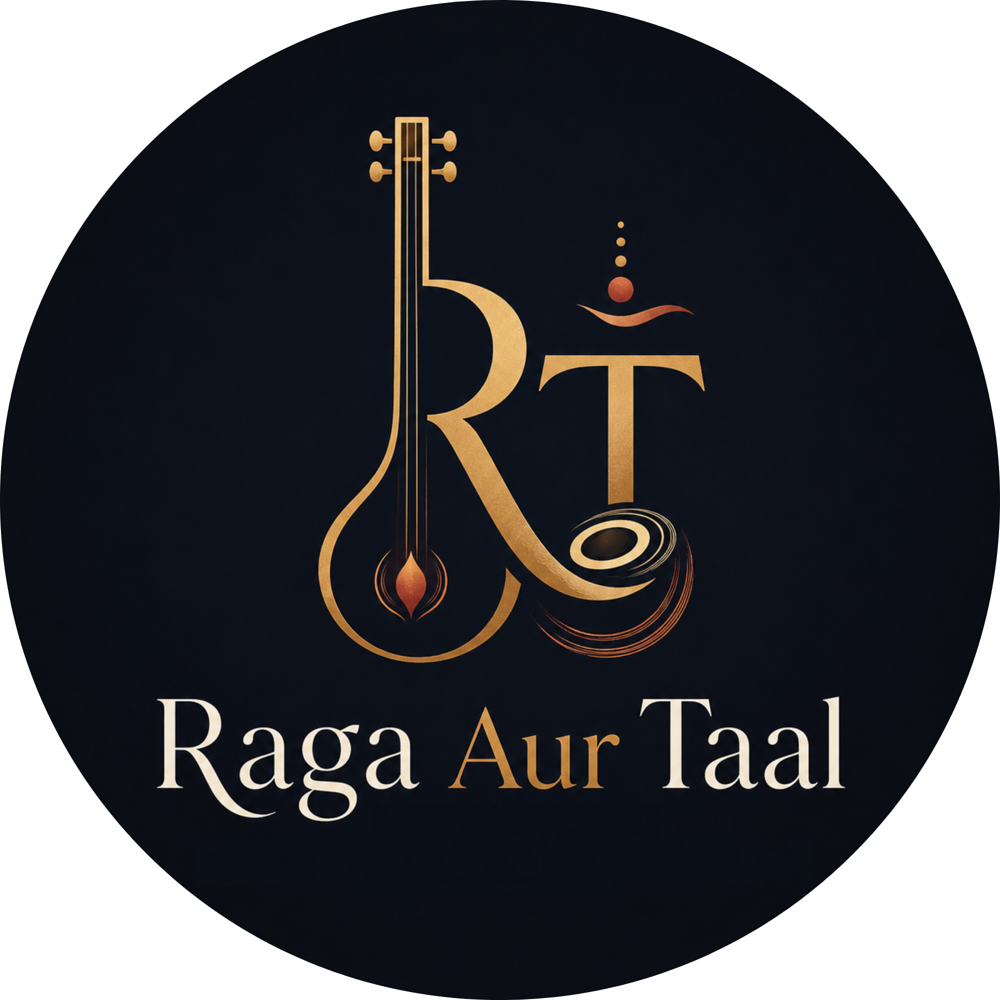

YouTube Features
Embed videos from youtube.com/@RagaAurTaal and add notes for raag, taal, lyrics, meaning, and credits.

Raga Aur TaalRecordings
A curated home for YouTube videos, audio recordings, concert clips, harmonium pieces, vocal practice, and devotional sessions.
Embed videos from youtube.com/@RagaAurTaal and add notes for raag, taal, lyrics, meaning, and credits.
Archive clean audio takes, rehearsal tracks, tanpura-backed practice, and harmonium recordings.
Organize performances by date, venue, performers, set list, and program notes.
Template
Short description and context.
Musical details for listeners and students.
Transliteration, translation, and devotional theme.